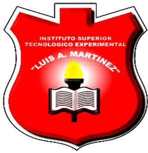

Soy Diego Patricio Jijón Viscaino, un apasionado de la tecnología y el desarrollo de software.
Fecha de Nacimiento: 30 de Enero de 2005
Lugar de Nacimiento: Ambato, Ecuador
Realicé mis estudios de colegio en la Unidad Educativa Luis A. Martínez, ubicada en el centro de Ambato. Estudié toda mi vida en esta institución, la cual fue fundamental en mi formación académica y personal. Durante el bachillerato, me especialicé en la carrera de Informática, donde adquirí conocimientos que me han servido como base para mis estudios universitarios en Ingeniería de Software.
Actualmente, estudio en la Universidad Técnica de Ambato en la Facultad de Ingeniería en Sistemas, Electrónica e Industrial (FISEI). Estoy cursando el cuarto semestre de la carrera de Ingeniería en Software.
Las materias que estoy cursando actualmente incluyen: